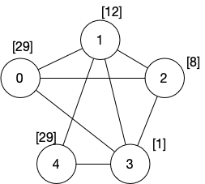
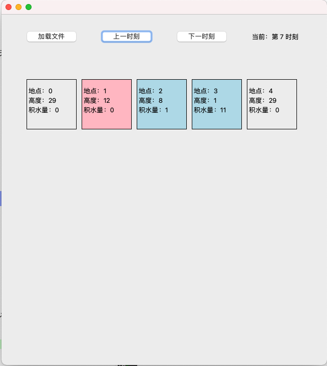

不踩水的上课之路1. 酷酷的标志（15 分）2. 读入地图（20 分）3. 计算水势（20 分）4. 上课之路（20 分）5. 可视化（5 分）小规模测试（即样例）输入文件的内容正确的输出（在标准输出中）评分标准
大学校园的排水系统或多或少都会有一定的问题。每到暴雨天，路面产生积水，如果再遇到上课时间，同学们偶尔也会冒出不如坐船、亦可赛艇的想法。在本题目中，你需要根据学校的地势和天气预报选出一条不需要踩水的上课之路。
每个程序都需要一个酷酷的标志来凸显其独特性。在本程序的开头，你需要首先打印以下图案： （建议复制粘贴）
SSSSS JJJJJJJJJ TTTTTTTTT UUU UUSSSS SSS JJJ TTT UU UUUSS SS JJ TT UU UUSSS JJ TT UU UUSSSSS JJ TT UU UUSSS JJ TTT UU UUSS JJJ TT UU UUSSS SSS JJ JJ TT UU UUSSSSS JJJJJ TTT UUUUUU
打印图案之后，你需要首先从标准输入中读取文件名。
此后，你需要从指定的文件中读取学校的地图与地势信息，再读取天气信息。读取信息部分应实现在一个名为 LoadFile 的函数之中。
为了简化题目，校园的地图简化为由边和点组成的无向图。 其中每个点表示校园中的一个地点，每条边表示连接两个地点的一条路。
下面一个地图信息的一个示例：
5 829 12 8 1 290 13 01 44 32 12 03 12 3
第一行包括 N 和 M，表示校园中共有 N 个地点（编号从 0 到 N-1）和 M 条边； 第二行包括 N 个数字，分别对应每个地点的高度； 第三行开始的 M 行中，每行有两个数字 A 和 B，表示从顶点 A 到顶点 B 有一条边（注意是无向边）；

【输出】
为了初步检测本步骤的正确性，在读取信息之后，你需要打印出具有最多条路的地点的编号（即度最大的顶点的编号）。如果具有最大的度的顶点有多个，打印编号最小的顶点编号。
暴雨是夏天的标配之一。 一旦下暴雨，路面会产生积水。 夏天的暴雨一般较难预测，但是幸运的你拿到了非常准确的天气预报。 在前述的文件校园地图信息之后的第一行，有一个正整数 R 表示天气预报中最近有 R 次降雨。 此后的 R 行，每一行表示一场降雨的信息，其中包括降雨的时间 T，降雨地点 L，降雨量 W。
一下是天气预报的一个示例：
41 1 101 2 51 3 72 1 8
现在知道在时刻 0 时，所以地点均无积水。 假设只有顶点会有积水的，积水会根据地势不同，在不同的地点之间流动，积水在路上的流动是瞬时的。
每个地点的积水量都是整数单位。
在时刻 t 到时刻 t+1 的过程中，地点 X 的积水（水势）变化顺序如下：
积水根据地势的流动规则：
举例来说，如果在时刻 t 地点 3 高度为 5，积水为 3，其相邻地点包括：
则在 t 到 t+1 过程中，地点 3 的积水首先通过排水系统排出 1 单位，剩余 2 单位的积水分别流向地点 1（地势最高）和地点2（高度相同情况下的顶点编号最小）。
另外请注意，同一单位的积水在 t 到 t+1 过程中最多只会流动一次，因此在步骤 1 和 2 中考虑 t 到 t+1 过程中地点 X 的积水量时，不需要考虑 t 到 t+1 过程中地点 X 增加的积水。
【输出】
现在，你需要根据前面的规则模拟出校园内积水变化情况，实现在一个名为 SimFlow 的函数之中。
在本步骤中，你需要根据校园的地势，输出一个数字 t，表示从时刻 t 开始，校园中不存在且不会再出现任何积水。（备注：时刻 t 一定在最后一场雨之后。）
世界上最悲惨的事情莫过于下雨了还要去上课，如果有更悲惨的，那一定是这节课在早八。 现在已知在前面读取的地图中，0 号地点为你的宿舍，N-1 号地点为你上课的教室，且前面步骤中读入的输入保证 0 和 N-1 两个地点不会下雨，地势高度相同且高于其他所有地点。 现在已知你走路的速度为 1（即每个单位时间可以从一个地点走到另外一个相连的地点），请计算在下面两种情况下你从宿舍到教室最短时间。
1）请计算出在晴天无积水时，从宿舍到教室需要的最短时间。 2）请计算出在前几个步骤中所描述的雨天，在避开积水的情况下（你和积水不可在同一地点出现），从宿舍到教室需要的最短时间（注意，在每个单位时间内，你除了可以从地点 X 走到相邻的地点 Y，还可以在地点 X 等待，但地点 X 在两个时刻内均不能有积水，也不能有降雨）。
此部分应实现在一个名为CalcShortestPath的函数之中。
【输出】
在本步骤中，你需要首先打印空格隔开的两个数字，分别为在晴天无积水时的最短时间和在前述雨天时的最短时间，共占一行。 此后再打印一行，表示在雨天时从宿舍到教室每个时刻你的位置，以逗号隔开。具体格式可参加样例。
为了更好地模拟出上课的路线，你需要写一个图形化程序，将上述过程展示出来。
在界面中，需有三个按钮，分别用于“加载文件”，“上一时刻”和“下一时刻”。 用户首先通过按钮选取输入文件，选取完之后，图形化程序应首先将地图绘制出来。 所有地点应以 5 个一行的形式，展示在界面上，每个地点应标明地点编号、高度和当前积水量。 当积水量不为 0 时，地点应为蓝色（具体哪种蓝色都可以）； 你所在的位置应标记为红色（具体哪种红色都可以）；
文件加载完毕之后，时刻为第 0 时刻，下一时刻和上一时刻两个按钮可以调整显示的时刻。
下图为一个示例，你所实现的界面有相应功能即可，不要求在细节上与下图严格相同。

5 829 12 8 1 290 13 01 44 32 12 03 12 341 1 101 2 51 3 72 1 8
SSSSS JJJJJJJJJ TTTTTTTTT UUU UUSSSS SSS JJJ TTT UU UUUSS SS JJ TT UU UUSSS JJ TT UU UUSSSSS JJ TT UU UUSSS JJ TTT UU UUSS JJJ TT UU UUSSS SSS JJ JJ TT UU UUSSSSS JJJJJ TTT UUUUUU1182 80,0,0,0,0,0,0,1,4
我们会根据大家的代码运行结果和代码实现按照步骤进行评分，因此即使你的程序结果不对，也会获得一定分数。各部分分数如下：
其中小规模数据的输入文件和正确输出已经给出。
大规模数据的输入文件已经给出。